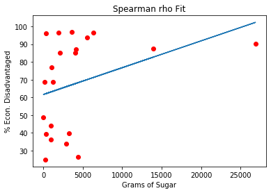

Introduction
Childhood obesity affects millions of Americans. In recent decades, rates of childhood obesity
have more than tripled, from 5% in 1970, to 19% in 2016. Children who experience obesity are more likely to remain obese as adults, more than
doubling risk for chronic diseases such as diabetes and heart disease. For these reasons,
childhood obesity poses a significant threat to public health.
While a multitude of biological and lifestyle factors influence bodyweight status, evidence suggests that there is a link between exposure to unhealthy food advertising
and childhood obesity. Previous research has found that most advertisements airing during children’s television programs are high in calories, fat,
sugar, and sodium, and low in fiber, vitamins, and minerals. After being exposed to these ads, research shows that children are more likely to make unhealthy food
selections. The chronicity of this negative feedback loop leads to poor diet and weight gain.

This line of research is informative for regulatory television programming decisions, but these are not the only types of ads children are exposed to. Stepping out into communities,
we are met with hundreds of ads every minute - from large colorful billboards and store fronts, to small monotone marquees. A large percentage of these ads are for foods and beverages (hereafter food).
To date, research is lacking that investigates the nutritional content of outdoor food advertising, or how exposure to it may be related to childhood obesity. Second only to home, children spend a great deal of their time at and around schools. Thus, these youth serving institutions are a primary mode through which children and adolescents are exposed to
outdoor Food advertising.
The Outdoor MEDIA (Measuring and Evaluating the Determinants and Influence of Advertising) Study was designed to document and describe the prevalence of outdoor food advertising
around schools, as well is investigate social disparities that may exist in their deployment. The present analysis evaluated food advertising and establishments within a half-mile of 12
middle schools and 9 high schools in Austin, TX. Photographs were taken of all outdoor advertisements and ads displaying food and beverage items were coded for nutritional content
(i.e. calories, fat, sugar, sodium) using the Nutrition Data System for Research (NDSR). School-level demographic information on economic disadvantage (i.e. % of students receiving
free/reduced price lunch) was obtained from the Texas Education Agency.
Because % of economically disadvantaged students (%EDS) was not normally distributed, spearman rank-order correlation coefficients were calculated comparing it to total ads, calories, fat, sugar, and sodium. Data were split by >60% EDS, and mean differences were tested for significance using t-tests where normality was shown, and Mann-Whitney U tests were normality was violated.
A machine learning random forrest framework was then utilized to build a model to predict if an ad was located closest to a high or low %EDS school based on macronutrient content.
Descriptive Statistics:
%EDS within the school ranged from 24.91 to 96.71 (M=67.7, SD=25.95).
Total ad count around each school ranged from 44 to 655 (M=201.2, SD=144.85).
Total calories depicted in ads around each school ranged from 1,093.86 to 182,554.29 (M=36,934.54, SD=41,986.98).
Total grams of fat depicted in ads around each school ranged from 27.58 to 4,038.96 (M=1,230.21, SD=1,131.34).
Total grams of sugar depicted in ads around each school ranged from 24.88 to 26,880.91 (M=4032.94, SD=5,952.47).
Total mg of sodium depicted in ads around each school ranged from 2,692.66 to 221,879.80
(M=50,475.99, SD=53,549.63).
Correlation Models:
Schools with a higher percent of economically disadvantage students had a higher percent of obese or overweight students. High advertisement density clusters around low-income and high obesity rate schools. %EDS is significantly correlated with % Overweight or Obese (rho=.86, p=.001), as well as total number of ads (rho=.66, p=.001).

%EDS is significantly correlated with ad exposure to each unhealthy macronitrient: calories (rho=.48, p=.03), fat (rho=.49, p=.02), sugar (rho=.43, p=.049), and sodium (rho=.47, p=.03).
Means Comparison Models:
Significant differences were detected comparing
schools less than 60%EDS to greater than 60%EDS in total ads (U=6, p=.001)...
calories (U=22, p=.02)...
fat (t=-2.45, p=.02)...
sugar (U=28, p=.04)...
and sodium (t=-2.44, p=.02).
Random Forrest Model:

Given the strong association between unhealthy ads and low-income communities, as well as demonstrated
significant differences in unhealthy macronutrient content based on a binary split of communities
SES, it is worth exploring if a prediction can be made at the advertisement-level if that particular
ad was placed in in a low- or high- SES community.
A random forest model was built using python SciKit-learn. The target prediction was designated as a
binary classification of greater than or less than 60% economically disadvantaged. Data was designated
as values for kcal, fat, carbohydrate, sodium, and sugar for each ad (n=2268). Data were randomly split
into training and testing subsets using the train_test_split SKL function. After training, 200 random
estimators were selected and accurately predicted the binary classification 82.7% of the time. Weights
of each estimator are reported:
kcal = 0.22
sodium = 0.22
carb = 0.20
fat = 0.19
sugar = 0.17